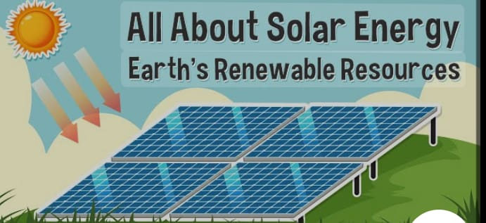
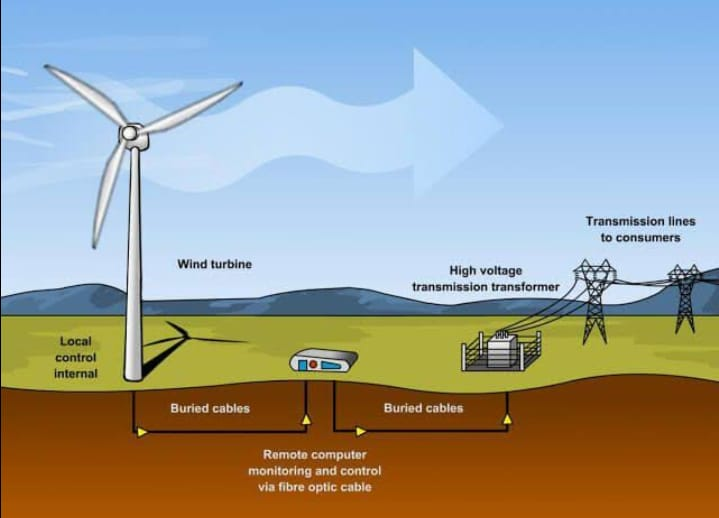
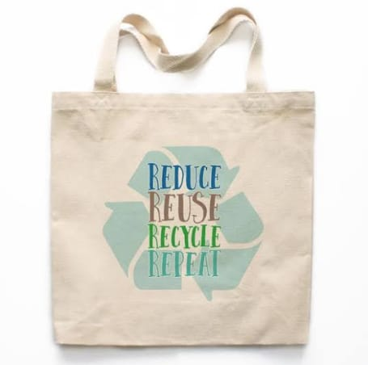

1. Solar power
"Harnessing the sun’s energy – A clean and renewable power source for homes and businesses." solar power is a renewable and infinite energy source

2.Wind energy
"Generating electricity through wind turbines – A sustainable and eco-friendly alternative to fossil fuels."Wind also helps in the generation of electricity, grain milling, water pumping, cargo ship powering, carbon

3.Reusable Bag
Reusable bags are eco-friendly alternatives to plastic bags, made from sustainable materials like cotton, jute, or recycled plastic. They are durable, washable, and reduce single-use plastic waste, making them perfect for shopping, groceries, and daily use.